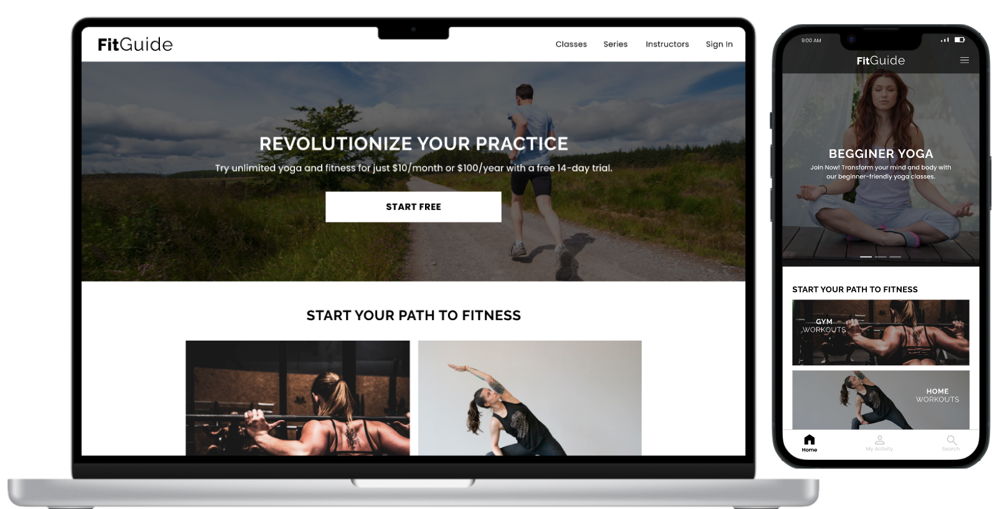
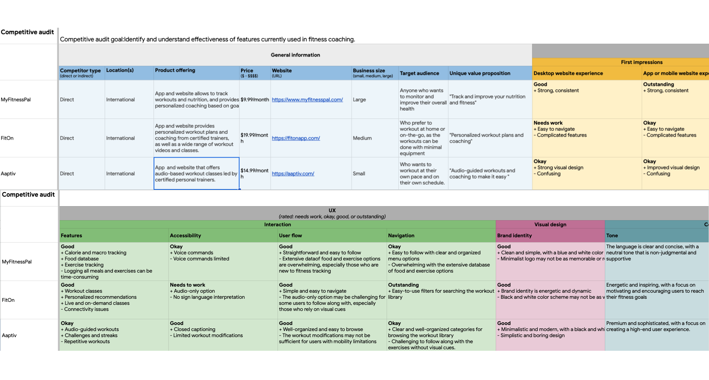
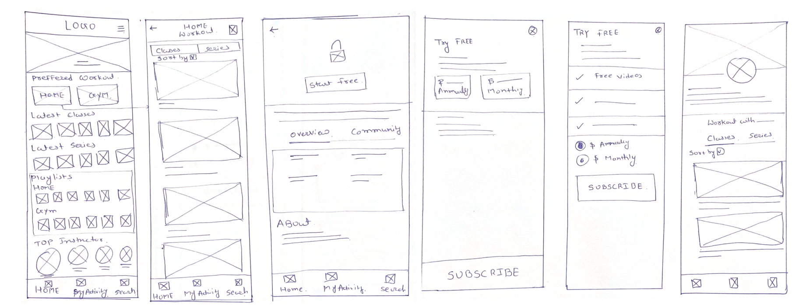
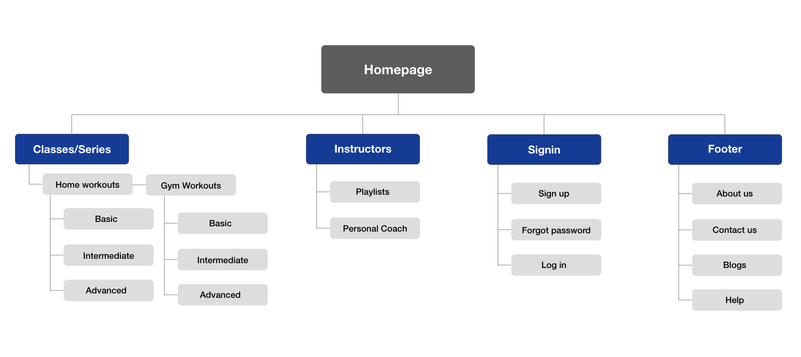
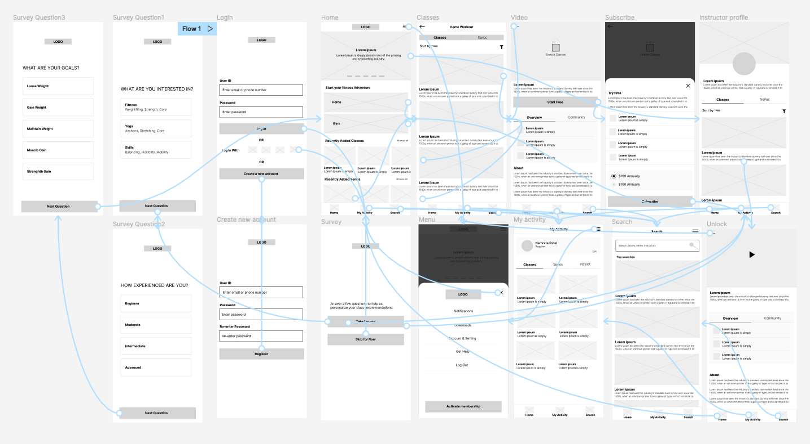
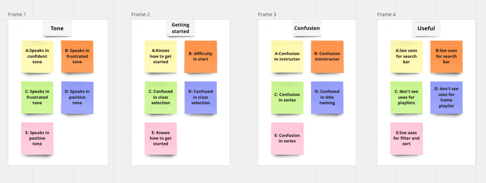
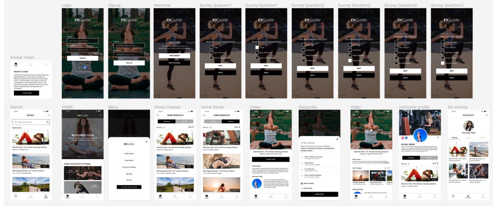

Fitness Coaching App & Website | Google UX Certification Project
One common obstacle faced by people who want to enhance their health and fitness is the absence of in-person coaching and guidance. For some individuals, visiting a gym or fitness center may not be possible or desirable. Additionally, certain people may find it difficult to utilize online coaching platforms due to a lack of familiarity with technology.
I wanted to design a solution to make fitness guidance accessible to individuals who are new to technology and assist them in establishing and sustaining a fitness routine. My solution includes step-by-step instructions for performing various exercises, as well as video demonstrations to assist with proper form.To make the app accessible to those who are new to technology, I have created a straightforward user interface with large, clear buttons and simple commands.The FitGuided app provides motivational tips, reminders, and alerts to help users stay on track with their fitness routine.
There are many individuals who aspire to lead a fit and healthy lifestyle but struggle to find the time and means to access in-person coaching. They often feel concerned about their health and wish to establish a fitness routine, but their busy schedules and physical location make it challenging to attend fitness classes or gyms. Moreover, some of these individuals may not be familiar with technology and prefer a simple and user-friendly interface. To address this challenge, I have designed a solution that provides easy access to fitness guidance through a user-friendly app. With this app, individuals can easily log in, browse through various instructors, and select a fitness routine that best suits their needs and preferences. FitGuide app has been designed to cater to individuals who are new to technology, with simple and intuitive navigation and easy-to-understand instructions.
Based on that, I did user research based on IDEO card sorting methods, including secondary research, interview and survey to define our main target users and features.
An audit of a few competitor’s products provided direction on gaps and opportunities to address with the fitGuide app.
View the full Competitive audit
I did a quick ideation exercise to come up with ideas for how to address gaps identified in the competitive audit.
My focus was specifically on easy and simple features of coaching.
The persona defined is based on our interview and survey findings:
Based on these findings, I create three persona who are our target users
Taking the time to draft iterations of each screen of the app on paper ensured that the elements that made it to digital wireframes would be well-suited to address user pain points. For the home screen, I prioritized a quick and easy booking process to help users save time.
Difficulty with website navigation was a primary pain point for users, so I used that knowledge to create a sitemap. My goal here was to make strategic information architecture decisions that would improve overall website navigation. The structure I chose was designed to make things simple and easy.
Using the completed set of digital wireframes, I created a low-fidelity prototype. The primary user flow I connected was building and selecting and scheduling, so the prototype could be used in a usability study.
View FitGuide app's low-fidelity prototype
After conducting user testing, I documented all user feedback and created an affinity diagram to analyze and group related points. The insights from the diagram helped me refine the design to better meet the users' needs. In this revision, I clarified that the user feedback was documented, and the purpose of the affinity diagram was to group related points. I also added that the insights from the diagram were used to refine the design to better meet the users' needs.
Based on my wireframe prototype, I conduct user testing with 8 participants. This time, I added more interaction and features into our final High-Fi Prototype.
After the class was end, I did not stop the project but continued to work the interface design, including contextual design, interactive prototype.
View FitGuide app's high-fidelity prototype